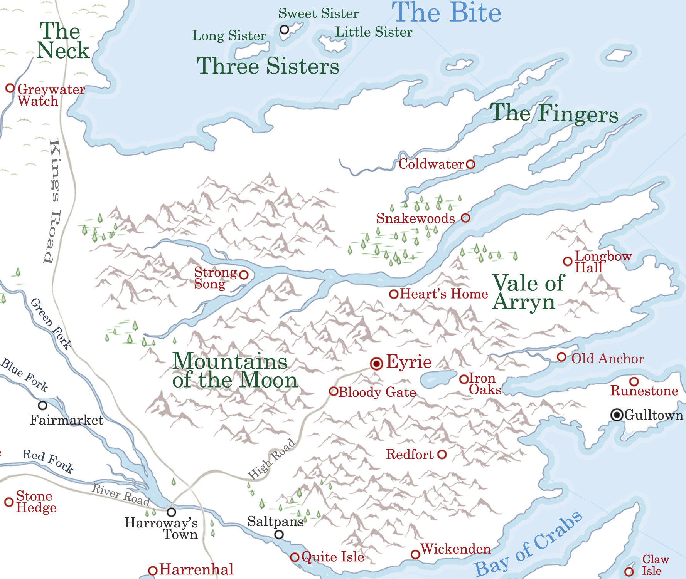

Alyssa's Tears
Alyssa’s Tears is a waterfall in the Vale of Arryn. It lies on the western side of the Giant’s Lance and is very close to the Eyrie. It receives its name from Alyssa Arryn, an ancient member of House Arryn who saw her family butchered before her and never shed a tear. No drop of the waterfall reaches the floor of the valley below.
Map on Next page.
